Les symboles alchimiques
Symboles alchimiques partie I - II - revu le 7 novembre 2003 abréviations
: sy : symbole - d : droite - g : gauche. Tous les extraits de Pernety sont tirés du Dictionnaire Mytho-hermétique . Liste : Acide - acide muriatique - acide nitrique - acide sulfurique - acier - aimant et feu philosophique - aimant des sages - air - alambic - alun, alun de roche - alun de plume - airain brûlé, cuivre calciné - amalgame - Amalgame philosophique primaire - Amalgame philosophique supérieur - Ana, parties égales - Année - antimoine - Argent, Lune - Argile - Arsenic, Régule - Athanor - Atrament (vitriol blanchi) - Atrament (vitriol rougi) colcothar - Azur - Bain - Bain de fumier - Bain Marie - Bain de sable - Bain de vapeur - Baume - Bismuth - Blanc d'Espagne - Bol d'Arménie - Borax - Brique - Brique pulvérisée - Broyer, Trituration - Calciner, calcination - Acide
Au centre, le Bélier qui permet de distinguer le dragon babylonien ou vitriol romain. A droite, la croix pattée autrement appelée croix ancrée. Elle signale un stade de l'oeuvre bien postérieur à l'utilisation du radical vitriol. Acide marin [muriatique]
Combinaison du sel marin [cercle avec diamètre horizontal] et de la croix [à droite] ou du Bélier [au centre]. C'est le vitriol aqueux. S'apparente au hiéroglyphe de la sitibine s'il est placé verticalement, mais perd sa qualité d'acide marin pour devenir du sel Nitre.
Acide nitrique [Aqua sicca, eau forte, acide azotique]
Combinaison du sel nitre [cercle avec diamètre vertical] et de la croix [à droite] ou le Bélier. S'apparente au hiéroglyphe de la stibine s'il est placé verticalement [mais alors perd sa qualité de sel nitre et devient du sel marin] Acide sulfurique
Même combinaison que pour l'acide nitrique à gauche, ce qui est étonnant ; à droite, la croix cerclée manifeste la qualité pontique qui se dégage et qui semble cumuler sel du sel marin et du sel nitre [ce qui est une erreur] ; il y aurait lieu de voir à droite le symbole de l'eau régale [?] Acier Pernety :
Les Philosophes ont beaucoup parlé de leur acier, entre autres le Cosmopolite [ 1 , 2 ] et le Philalèthe
. Ce qui a donné occasion à plus d’un Chymiste de chercher la pierre philosophale dans l’acier, métal que I’on emploie à faire des outils; mais en vain travaillent-ils sur ce métal comme sur les autres. L’acier des Sages est la mine de leur or philosophique, un esprit pur par-dessus tout, un feu infernal et secret, très-volatil dans son genre, et réceptacle des vertus supérieures et inférieures, le miracle du monde, que Dieu a scellé de son sceau, enfin la clef de tout l’oeuvre philosophique. C’est la partie la plus pure et volatile de la matière, dont les Sages font le grand oeuvre. Il n’a point d’autres noms dans aucune langue, qui ne signifie la quintessence des choses de l’Univers. Les Philosophes lui ont donné le nom d’acier, parce qu’il a une telle sympathie avec la terre d’où on l’extrait, qu’il y est sans cesse rappellé, comme à son Aimant.
Cet acier ou chalybs s'apparente à Arès [gauche] ou encore à un sel dans lequel on devine sa parenté avec l'acide marin. La lettre A est donc artificielle et il faut voir un L grec [ L
] en surimpression par rapport au symbole fleché. Lemery, dans sa
table des pricnipaux caractères chymiques
, ne donne que le symbole de gauche, avec une flèche simple et la légende Acier, Fer ou Mars. Aimant et Feu philosophique Pernety :
Les Sages n’ont pas fait moins d’éloges de leur aimant que de leur acier. Mais il ne faut pas s’imaginer que cet aimant soit l’aimant vulgaire. Ils ne lui ont ordonné ce nom qu’à cause de sa sympathie naturelle avec ce qu’ils appellent leur Acier
. Celui-ci est la mine de leur or, et l’aimant est la mine de leur acier. Le centre de cet aimant renferme un sel caché, un menstrue propre à calciner l’or philosophique. Ce sel préparé forme leur mercure, avec lequel ils font le magistère des Sages au blanc et au rouge. Il devient une mine de feu céleste, qui sert de ferment à leur pierre, pour la multiplier, en faire l’élixir, la poudre de projection, et la médecine universelle. Et tout cela se fait par une opération simple, sans beaucoup de frais, mais dans un temps un peu long. Les Sages donnent aussi le nom d’aimant à leur mercure déjà fait, et à la partie fixée de la matière qui fixe le volatil.
Si nous avons des doutes sur ce que recouvrent exactement les mots Acier et Aimant, voilà qui peut lever toute équivoque : Si l'Acier est la mine de l'Or, cela signifie qu'il est la source du Soufre rouge ou teinture ; il ne peut donc s'agir que d'un vitriol [
bleu, blanc, vert, rouge ou marin peu importe ; alun ou guhr vitriolique, etc.
] Donc, l'Aimant ne peut être que la matière qui fixe l'Or, c'est-à-dire la partie femelle du Rebis ; il s'agit du Corps de la Pierre qu'on appelle encore Arsenic [ Geber ] ou Sel [ Paracelse
]. Du coup le sel caché est la salamandre [ cf. Fontenay
]. Le mercure est formé d'un Mixte de l'Acier [ voilé par Chrysaor ] et de Mercure proprement dit [ Pégase
]. Le symbole de gauche montre une urne affectant la forme du noeud descendant de la Lune surmonté d'un quadrilatère, signe chthonien par excellence. Quant au symbole de droite, il figure l'extrémité de la lettre U en grec [ U
] où l'on peut deviner les cornes d'un taureau [ Atalanta, XXXVIII ]. Lemery : symbole de droite. Aimant des Sages
Symbole complexe tenant du FEU puisqu'il s'agit de l'Aimant préparé, c'est-à-dire allié au Mercure. C'est ce qu'exprime le symbole de gauche [triangle à base inférieure], complété du signe crucifère paté où l'on peut deviner la Vénus hermétique. A droite, le symbole s'apparente à celui de l'Aimant mais il se complète par un losange où l'on peut deviner le signe de l'eau et du feu, marque du Mercure. Air
A gauche, le symbole est le même que celui du sel marin ce qui ne laisse pas d'étonner. A droite, le symbole conventionnel de l'AIR envisagé comme l'un des quatre Eléments. Au centre, une figure très rare dans l'iconographie où l'on devine une formation crucifère avec un double cercle concentrique. Il peut s'agir de l' Air des Sages de Philalèthe. Pernety :
Est aussi un nom que les Chymistes Hermétiques donnent à leur mercure subtilisé, et sublimé en fleurs blanches, ou terre très tenue, qu’ils appellent aussi l’ oiseau d’Hermès , l’Aigle, etc Alexandre dit dans la Tourbe
, ou Code de vérité : quand vous aurez tiré l’eau de l’air, l’air du feu, et le feu de la terre, vous aurez fait tout l’œuvre. Aristote le Chymiste dit aussi : il faut changer l’air en eau, convertir cette eau en feu, de ce feu extraire l’air; car c’est du feu chymique fixé, et de notre eau que l’on fait l'air, qu’il faut convertir en feu, duquel, en continuant l’opération, on fait la terre, et de cette terre le feu. Et ainsi nous convertissons les éléments l’un en l’autre; car en convertissant les éléments on trouve ce qu’on cherche. L’air des Philosophes n’est donc qu’une eau coagulée par le feu, et réduite en poudre ou fleurs blanches très-subtiles.
Il faut se défier de la définition que donne Pernety de l'Air. Selon notre système, il s'agit du mélange Rebis-Mercure, où les Soufres se trouvent totalement dissous dans le fondant. C'est une période qui se situe entre le Lion et les Gémeaux. L'oiseau d'Hermès est l'oie ou le cygne. Mais la volière hermétique abrite de nombreux oiseaux [ cf. le poème du phénix pour un aperçu ]. Lemery : sy d. Alambic
Symbole majeur, l'alambic n'est pas le récipient que nous décrivent les vieux traités de chimie. C'est l'alambic des sages, c'est-à-dire le contenant et le vase de nature. Il peut être trouvé lorsqu'on analyse la formation de la lettre E selon la Monade Hiéroglyphique de John Dee ou l' Escalier des Sages de Van Helpen [ cf. poème du phénix
]. Les hiéroglyphes de droite et gauche sont congénaires : il s'agit des lettres M et L ( en grec ) entrelacées : M et L
. Il s'agit donc, si l'on en croit l'auteur du
Pilote de l'Onde Vive ou le Secret du Flux et du Reflux de la Mer [ Mathurin Eyquem, sieur du Martineau
], du Bélier [L] et du Taureau [M], ce qui s'accorde bien avec nos hypothèses, puisque le symbole entrelacé correspond à du nitre vitriolé. Le symbole central, peu courant, est composé du symbole de la Balance [ Vénus
] et d'un signe évoquant le chiffre 3 qui, à en croire la Monade Hiéroglyphique, peut être rattaché au Bélier si on lui fait subir une rotation de - p /4. Pernety :
Les Philosophes Hermétiques donnent quelquefois ce nom a leur mercure, parce que c’est par son moyen qu’ils font leurs prétendues distillations, sublimations, etc. Lemery : sy. d. et g. Alun, Alun de roche
Sel fondamental de l'oeuvre, l'alun est assimilable à Méduse, la Gorgone que Persée décapite [
le symbolisme est le même que celui de la décapitation d'Argus par Hermès
]. On observe que le symbole consiste en un cercle [attribut du Mercure] lié à gauche à des éléments de la flèche et de Saturne, mais qu'il y manque un élément. Lemery donne les deux symboles de droite. Dans l'ensemble, l'hiéroglyphe évoque un sel double ce qui est met d'accord l'hermétisme et la chimie moderne. L'un des sels, Chrysaor, est fixe, représenté par la ligne et l'autre est volatil, représenté par la courbe. Pernety :
Alun. Nom que les Philosophes ont donné quelquefois à leur sel, qui n’est pas l’alun vulgaire; mais un sel principe de l’alun, des autres sels, des minéraux et des métaux. ALUN ALAFURI. Sel Alkali.
ALUN DE ALAP. Sel de Grèce. Planiscampi [ 1 , 2 , 3 , 4 , 5 , 6 ,]. ALUN ALLI. C’est le nitre fixé. ALUN ALKORI. Nitre simple.
ALUN MARIN Esprit humide de l’air, qui vivifie tous les êtres sublunaires, par la chaleur qui l’ accompagne ALUN SYRAH, ALUN ALKOKAR, ALUN ALFURIN. Alun calciné.
Alunibur. Argent, Lune des Philosophes, leur pierre au blanc parfait.
On voit que l'alun est d'une grande complexité dans sa désignation hermétique. Il en va ainsi de nombreux sels doubles. Alun de plume
Ces signes ne sont pas, à notre connaissance, rapportés explicitement dans les traités. Toutefois, on ajoutera que les nombreux motifs fleuraux peuvent en être une allusion. Rappelons que l'alun de plume est de l'alun déphlegmé, c'est-à-dire à qui on a enlevé l'excès d'eau [ mais pas l'eau de constitution ]. Airain brûlé, cuivre calciné
Il s'agit d'un symbole complexe et il faut savoir de quoi l'on parle. En effet, l'airain est souvent signifié pour le Rebis qui constitue l'amalgame philosophique. Sous ce rapport, le symbole n°2 à partir de la g. est typique et se retrouve dans l' Alchimie de Flamel
. Il doit être distingué du cuivre calciné qui est du vitriol bleu brûlé [
c'est-à-dire de la couperose transformée en vert-de-gris
]. Notez que le symbole de droite offre des ressemblances avec l'hiéroglyphe de Neptune, réalisé au crépuscule du matin lorsque Vénus s'apparente à Lucifer et que la Lune est dans son dernier quartier. Notez encore que le symbole cerclé s'apparente à un triple signe, celui des Jumeaux, du nitre et du vitriol et qu'en cela, il s'agit du signe du compost [ mélange Rebis-Mercure
]. Le symbole n°2 à partir de la gauche est superposable au sy. de d. à une phase ultérieure, puisque la Lune a progressé entre-temps [
il n'y a plus la fourche de Neptune, outre qu'une rotation de 3 p /4 a été effectuée
]. C'est le sy. g. qui est le plus difficile à analyser : on y lit Vénus, cercle crucifère à croix inférieure, avec une barre horizontale surajoutée, barre que l'on retrouve dans le sy. n°3. Il peut s'agir du signe de l'ouverture des métaux puisqu'il s'apparente à la croix pattée. Pernety :
Airain d’Hermès. Terme de Chymie, dont se servent les Philosophes Hermétiques, pour signifier le corps imparfait dont ils doivent se servir pour l’œuvre de la pierre. Ils lui donnent également ce nom, avant qu’il soit purifié de ses hétérogénéités, comme pendant la putréfaction et la décoction continuée qu’il lui faut pour le rendre soufre incombustible. Ils le nomment aussi Laiton, Orpiment, Lion vert, Arsenic, et de divers autres noms qu’on peut voir au terme Matière
, et dans les articles qui les concernent.
AIRAIN NOIR. Matière des Philosophes pendant la putréfaction, ou leur laiton qu’il faut blanchir.
AIRAIN BLANC. C’est le laiton blanchi, ou la pierre au blanc.
AIRAIN INCOMBUSTIBLE. Magistère au rouge parfait, parce qu’alors il ne craint plus les atteintes du feu.
La définition que donne Pernety de l'Airain est à l'image même des symboles : complexe. De fait, il est bien difficile de séparer en plusieurs phases séparées un processus dynamique continu. Nous proposons l'interprétation suivante : les matières, au départ porphyrisées, sont introduites dans un creuset brasqué en même temps que l'eau qui ne mouille point les mains [ Mercure
]. La phase de dissolution est celle où il faut blanchir le laiton, c'est-à-dire transformer une TERRE [poudre] en AIR
. Il est ici très difficile de faire voir ce qu'est cet AIR
; il s'agit de la portion du compost qui circule et est animée de mouvements de convection. L'airain blanc se signale par des phénomènes d'irisation et les couleurs de la queue de paon [
là aussi on est obligé pour maintenir de la « clarté » dans l'analyse de fragmenter un processus continu
]. En bref, il faut comprendre que les éléments étant totalement dissous, on accède à la blancheur [
ce qui nous a fait dire que la putréfaction est la solution de la conjonction ; sur tout cela cf. Ripley qui est clair et complet ].
A noter que Lemery ne donne pas d'entrée à l'airain dans sa table des caractères. Amalgame
Stricto sensu, un amalgame est un Mixte où figure forcément un sel de mercure. C'est vrai aussi dans l'alchimie, mais il ne s'agit pas du vif-argent vulgaire mais de l'argent-vif des philosophes. Cet amalgame prend aussi le nom de Compost et correspond à l'aliage du Mercure et du Rebis. Sa structure entrecroisée nous est familière et Fulcanelli s'en est servi dans sa parabole du gâteau des Rois [ Myst. Cath. ]. Lemery ne donne pas le sy. d. Pernety :
Faire la réunion du mercure philosophique avec le soufre ou l’or des Sages; non pas à la manière des Chymistes vulgaires, en broyant dans un mortier ou autrement, une matière solide avec un corps liquide, mais en conduisant le feu des Philosophes, suivant le régime prescrit; c'est-à-dire, en perfectionnant l’oeuvre par la cuisson ou digestion continuée, au feu égal, sulfureux, environné et qui ne brûle pas. Voyez Artephius , sur le régime du Feu.
Le sy. g. est intéressant car il rappelle par ses lignes horizontales une portée de musique. Michel Maier parle dans son Atalante fugitive , emblème I . Le passage vaut d'être cité :
Mais, demandera-t-on, quel est celui qui doit être porté par le vent ? Je réponds : chimiquement c’est le soufre qui est porté dans l’argent-vif
comme l’attestent Lulle au chapitre 32 du Codicille, et tous les autres ; au point de vue physique c’est le fœtus qui doit bientôt naître à la lumière ; je dis aussi qu’au point de vue arithmétique, c’est la racine du cube ; d
ans le domaine de la musique c’est la double octave
Maier est très clair et nous rejoignons sa vision du Soufre porté dans l'argent-vif. La double-octave, c'est la lettre A ou plutôt L [ L grec majuscule ]. Amalgame philosophique primaire
Le symbole montre une étoile à cinq branches, correspondant à la quintessence. Il s'agit des pommes d'or contenant les pépins où gît, dans sa tannière, le Soufre rouge. Amalgame philosophique supérieur
Voilà un signe très rarement trouvé dans l'iconographie. Il semble composé de deux parties. Une partie supérieure, où l'on retrouve le signe du feu [ L
] que surmonte un croissant de Lune ; la partie inférieure où l'on devine un U [ U
], c'est-à-dire le signe du Rebis, coupé d'une ligne horizontale pour figurer le nécessaire creuset. On ne peut s'empécher d'y voir aussi la forme de la tête d'un cabridé : le Capricorne s'offre à nous en première association d'idée. C'est logique, puisque l'amalgame, porté à un degré de couronne supérieur, doit précéder de près la réincrudation , qui s'opère aux signes du Sagittaire et du Scorpion . Ana, parties égales
Il s'agit plus d'un signe cabalistique, se rapprochant de quelque monade, que d'un signe alchimique à proprement parler. Seul à notre connaissance, E. Canseliet s'est exprimé en employant ce signe : «
Notre sel ou, si l'on préfère, notre fondant, est double parce qu'il est physiquement composé de l'addition ana de deux sels différents.. .» [
l'Alchimie expliquée sur ses Textes classiques, le Sel des Philosophes, p. 167 ]
C'est la lettre N qui donne la clef du problème si l'on veut considérer que N = õ + \ + ó . = õ \ ó
Nous avons déjà rencontré la barre oblique \. Elle fait partie du symbole de l'alun. Quant aux jambages du N, il s'agit des deux éléments du Rebis tels qu'ils apparaissent dans l'hiéroglyphe du Cancer [ Atalanta, XLII ].
là, précisément où nos matières sont fondues. Année
Il s'agit là de l'année philosophique qui ne correspond pas, forcément, avec l'année tropique. Il faut plutôt entendre par année le nombre de fois que l'on renouvelle les réitérations de la même technique. Laquelle ? Les alchimistes restent muets. Certains avancent qu'il s'agirait des sublimations, c'est-à-dire des assauts de crue du Nil, autrement dit des Aigles de Philalèthe. Paracelse
ajoute qu'il faut faire parcourir à Saturne toutes les sphères des autres planètes. Faut-il ajouter que le sy. g. est celui du serpent Ouroboros ? Pernety :
Les Philosophes ont un calcul différent du calendrier vulgaire, quand il s’agit de compter leurs années, leurs mois, leurs semaines et leurs jours. Ils comparent le temps qu’il faut pour parfaire I’oeuvre à l’année commune, parce qu’ils partagent leurs opérations en quatre temps, comme I’année commune en quatre saisons. Ils ont adopté les mêmes dénominations, et on les trouvera expliquées dans leurs articles. Philalèthe
dit que les Sages réduisent les années en mois, les mois en semaines, et les semaines en jours; mais cette réduction n’est pas encore une règle générale, suivant laquelle on doit s’imaginer que les Philosophes travaillent, puisque l’Adepte, qui fit la projection devant Helvetius le père [ 1 , 2 , 3 , 4 , 5 , 6 , 7 , 8 , 9 , 10 , 11
,], lui dit que l’oeuvre pouvait se faire en quatre jours. On peut consulter là-dessus le Vitulus aureus
du même Helvetius. Philalèthe fait même remarquer qu’il faut entendre cette réduction de l’année, de la médecine du troisième ordre, et même de l’année philosophique. C’est dans le même sens qu’il faut expliquer Pline, lorsqu’il dit, que l’année philosophique est le mois commun; il fallait ajouter philosophique. D’autres disent que l’année philosophique est de sept ans et neuf mois. Au bout des trois premières années le mercure ou vinaigre philosophique devient médecine; après cinq ans, le mercure ne l’est plus, c’est la terre feuillée; et sept ans expirés perfectionnent le magistère et la médecine universelle, auquel temps il faut encore ajouter neuf mois pour l’élixir ou poudre de projection. On peut dire, en général, que l’année des Philosophes n’est pas déterminée par le nombre des jours. Si l’agent ou le feu philosophique est bien administré suivant les règles de l’art, l’oeuvre sera plus tôt finie. Mais quelque nombre de jours que l’on emploie, l’année Hermétique sera toujours complète, parce qu’elle aura eu ses quatre saisons. L’hiver qui est le commencement de l’oeuvre, dure jusqu’après la putréfaction : le printemps commence lorsque la matière sortant de la putréfaction se volatilise, et passe de la couleur noire à la blanche; l’été dure depuis que la couleur blanche se change en couleur orangée jusqu’au rouge de rubis. Alors c’est l’automne, temps où 1’Artiste recueille les fruits de ses travaux. Ainsi, quand les Philosophes disent qu’il faut trois ans pour parfaire l’oeuvre, ils ont raison dans leur sens; mais il ne faut pas l’entendre de trois années vulgaires : c’est des trois opérations requises : la Première, pour faire leur soufre ou minière du feu; la seconde, pour la pierre ou l’élixir; la troisième, pour la multiplication : et comme on peut répéter la multiplication jusqu’à sept fois, quelques-uns ont dit qu’il fallait neuf ans, d’autres douze. Ce qui ne doit s’entendre que de la réitération de chaque opération; puisque Morien
nous assure que la seconde est une répétition de la Première. Philalèthe
a nommé les trois premières opérations. les médecines du premier, du second et du troisième ordre de Gerber. Voyez TEMPS. Antimoine
Les alchimistes se sont évertués à faire croire que l'antimoine était leur matière première. C'est par cabale qu'il faut le comprendre. Basile Valentin, dans son Char Triomphal
a fait accroire de telles fables...que les étudiants plus avides de résultat que de philosophie ont cru sur parole. Les sy. n°2 et n°3 à partir de g. sont classiques et on les retrouve partout, en particulier dans l' Alchimie de Flamel
. Le sy. g. est déjà plus atypique. Il s'agit d'une flèche dont la plume est faite de sel nitre ; le sy. g. n°2 y présente, au contraire, le sel marin mais la flèche est remplacée par une croix pattée [
on peut aussi y reconnaître le nitre vitriolé, après rotation de p /4
]. Les deux sy. d. sont nettement plus anormaux. Vus toutefois selon le formalisme traditionnel car selon notre hypothèse, il n'est pas difficile de voir dans la stibine l'hiéroglyphe de l'eau ignée ou du feu aqueux. Quant au sy. d., on y voit une cornue à chapiteau pourvue d'un tube, qui évoque une idée de distillation et de sublimation. Pernety :
Nom que les Philosophes ont donné à la matière sulfureuse mercurielle qui fait partie du composé philosophique. Tout le secret donc de ce vinaigre antimonial. consiste en ce que par son moyen nous sachions tirer du corps de la magnésie l’argent vif qui ne brûle point. C’est là l’antimoine et le sublimé mercuriel. Artephius
. Les Chymistes se trompent quand ils prennent l’antimoine vulgaire pour la matière des Sages. La chose à laquelle les Philosophes donnent le nom d’antimoine est leur eau permanente, leur eau céleste, en un mot, leur mercure; parce que celui-ci nettoie, purifie et lave l’or philosophique, comme l’antimoine commun purifie l’or vulgaire. Basile Valentin
dit que l’antimoine préparé spagyriquement, est un antidote contre tous les venins. Il l’appelle le grand Arcane, la Pierre de feu; et avance qu’il a tant de vertus, qu’aucun homme n’est capable de les découvrir toutes : et que peu s’en faut qu’il n’ait toutes les propriétés de la pierre Philosophale, tant pour la guérison des maladies du corps humain. que pour la transmutation métallique. Voyez son Triomphe de 1’Antimoine .
Qu'est-ce que l'antimoine hermétique ? Rien d'autre qu'un fondant alcalin où cuisent deux sels qui sont les colombes de Diane. Argent, Lune
Les sy. de g. et d. sont bien connus ; ils n'expriment pas le même point de science. Le sy. d. montre la Lune en son premier quartier : il s'agit alors du Mercure préparé ; le sy. g., c'est-à-dire la Lune en son dernier quartier, représente le Soufre blanc ou SEL
de la Lunaire. Notez qu'à d. on ne voit pas le disque lunaire alors qu'il est visible à g. C'est une indication sur la lumière cendrée de la Lune, que nous avons évoquée dans l' Atalanta, XLV
. Quant au sy. du centre, on le voit peu dans les figures hiéroglyphiques des Sages. Lemery donne les sy. d. et g. dans sa Table. Pernety :
Argent. Lorsque les Philosophes disent notre Argent ou notre Lune, ce n’est pas de l’argent vulgaire, dont on fait les ustensiles, les meubles et la monnaie, qu’ils parlent; c’est de leur matière quand elle est parvenue au blanc parfait par le moyen de la cuisson. Ce terme s’entend aussi de leur eau mercurielle, qu’ils appellent aussi Femelle, Beja, Sperme, etc. Quelques-uns le nomment Or blanc, Or crud.
ARGENT COMMUNIQUANT. Les Philosophes ont donné ce nom au sel qui entre dans la composition de la pierre philosophale. Jean de Roquetaillade [alias Rupescissa : 1 , 2 , 3 , 4 , 5 , 6 , 7
, ce sel semble ne pas être autre chose que du Soufre blanc ].
ARGENT DE MERCURE. Élixir au blanc, ainsi nommé de ce qu’il est composé du mercure philosophique.
ARGENT DU PEUPLE. Quelques Chymistes ont donné ce nom au sel. Johns.
ARGENT-VIF des Philosophes. Il faut faire attention qu’argent vif et vif -argent n’est pas la même chose. Le vif-argent est le mercure vulgaire, et l’argent vif est celui des Philosophes Hermétiques. Ils s’expriment ainsi pour marquer l’action et la vie de leur mercure, qui est la semence des métaux, au lieu que le vulgaire est un métal déjà fait. Ils lui ont donné le nom d’Argent vif, parce qu’il est volatil, blanc, clair, froid, humide, coulant, et susceptible de coagulation, comme le vulgaire, dont il est la semence. Voyez MERCURE PHILOSOPHIQUE.
ARGENT-VIF. Ce terme signifie quelquefois, non le mercure des Sages, mais leur magistère au blanc, qui en est composé. Les Philosophes lui ont donne ce nom par équivoque, pour le distinguer de l’argent commun et vulgaire, qu’ils appellent Argent mort.
ARGENT-VIF EXALTÉ. Lune des Philosophes, ainsi nommée de ce que ce mercure est purifié et poussé à un degré de perfection qu’il n’avait pas avant d’être parvenu au blanc.
ARGENT-VIF ANIME. Mercure des Sages après son union avec la pierre ignée, le soufre philosophique.
ARGENT-VIF COAGULÉ OU PURIFIÉ. C’est le magistère au blanc. [l'argent-vif coagulé correspond à un stade plus avancé selon nos conceptions, à l'époque de la rubification] Argile
C'est la terre adamique, nommée encore terre rouge. L'image montre le symbole typique de la Terre, avec une surimpression de deux branches du triangle, dessinant un 7
dont on sait l'étroite parenté avec Apollon. L'argile est, là encore, un sel double qui permet, par séparation, de récolter du Soufre rouge et du SEL de la Lunaire. Voyez Sainte-Claire Deville
sur cela. Le mot argile est écrit dans les textes suivants : l'Oeuvre Secret d'Hermès [ Jean d'Espagnet ] ; la Philosophie Naturelle des Métaux [ Bernard Le Trévisan ] ; du Vitriol Philosophique [ Tripied ] ; De Lapide Philosohorum [ Lambsprinck ]. Les alchimistes modernes [ Fulcanelli et E. Canseliet ] en parlent assez ouvertement. Arsenic, Régule
L'Arsenic vulgaire a parfois été employé par les alchimistes. Jollivet-Castellot a réalisé des tentatives avec avec du trisulfure d'arsenic allié à de petites quantités de kermès minéral. Notez que lorsque les Adeptes parlent de l'arsenic, ils ont généralement en vue l'orpiment, à l'instar de l'atrament, ou d'autres vitriols. Basile Valentin a mêlé quatre onces d'arsenic rouge et deux onces de crocus martial dans son Char Triomphal ; voici ce qu'il dit : «
Sublimez ensuite le tout dans un vaisseau de verre selon l'art, et vous aurez des rubis orientaux aussi beaux et aussi colorés que les véritables ; lesquels sont néanmoins volatils, n'ayant rien de fixe. »
Faut-il être sourd ou aveugle pour comprendre que Basile ne eput pas évoquer de l'orpiment non plus que du crocus ? C'est qu'il a à l'esprit l'Arsenic de Geber [
Corps de la Pierre ou principe salin et résineux
] d'une part et le Soufre rouge ou teinture d'autre part. Philalèthe rapporte que dans l'oeuvre, il y a trois sels : le premier formé des parties d'Arès, le second des cendres, et le troisième de l'Arsenic ou Soufre. Bernard Le Trévisan, dans son Verbum dimissum , ne dit pas autre chose : «
Ainsi c'est une Trinité en Unité, et une Unité en Trinité; parce que là, sont Corps, Ame et Esprit; là aussi sont Soufre, Mercure et Arsenic : Car le Soufre spirant, c'est-à-dire jetant sa vapeur en arsenic opère en copulant le Mercure; et les Philosophes disent que la propriété de l'Arsenic est de respirer et que la propriété du Soufre est de coaguler, congeler et arrêter le Mercure »
Certains textes mentionnent des teintures d'argent réalisées par de l'arsenic sublimé [ Idée alchimique, I ]. On a pas assez vu aussi qie « le mâle », c'est le
nom grec de l'arsenic, traduit avec le sens littéral et commun du mot arsenikon . Chevreul [ Idée Alchimique, III
] parle encore d'Isaac Le Hollandais, dont il fait assez grand cas [ l'Oeuvre de Saturne
], et pense que c'est lui qui a donné au mot SEL la correspondance de l'Arsenic, que l'on rattache à Geber. Des colorations en jaune et en rouge sont assez spécifiques de sels d'arsenic comme, respectivement le réalgar [ surnommé mâle rouge
]. Sur l'usage de l'arsenic dans le verre, voyez l'Art de la Verrerie [ 1 , 2 , ] de Loysel. Le pseudo-Lulle, dans la Clavicule , parle de l'arsenic : «
Le vase s'étant refroidi, tu l'ouvriras et tu y trouveras ta matière sublimée, blanche, c'est notre Terre Sigillée, c'est notre corps sublimé, élevé à une haute dignité, c'est notre Soufre, notre Mercure, notre Arsenic, avec lequel tu réchaufferas notre Or, c'est notre ferment, notre chaux vive et il engendre en soi le Fils du feu qui est l'Amour des philosophes . »
Comme d'habitude, les mots accumulés faussent le sens de l'interprétation pour celui qui ne compulse pas plusieurs textes en parallèle. Jean d'Espagnet parle lui aussi de l'arsenic : «
Les métaux parfaits contiennent en eux deux choses qu'ils peuvent communiquer aux imparfaits, à savoir la teinture et la fixation. Car pour autant qu'ils sont teints d'un soufre pur, c'est-à-dire d'un soufre blanc, et d'un (autre) rouge, et qu'ils sont fixés, autant leur teinture teint parfaitement, et ils fixent aussi parfaitement étant bien préparés avec leur propre soufre et leur propre arsenic. Autrement, ils n'ont pas la faculté de multiplier leur teinture. [ l'Oeuvre Secret d'Hermès , cap. 29 ] »
D'Espagnet, notez-le bien, ne voile qu'à peine la vérité. C'est l'un des auteurs les plus charitables et les plus proofnds qui soient, pour autant qu'on prête attention. Philalèthe
lui doit beaucoup et Newton a lu ses ouvrages. Enfin, l'orpiment est appelé par quelques alchimistes Airain
, ce qui ne facilite pas la lecture des textes. C'est dans ce sens que paraît en parler Salomon Trismosin : «
A cette même fin Morien l'a doctement comparé [la putréfaction] à l'arsenic, à l'orpiment, à la tutie, à la terre pourrie et au soufre puant, à tout venin, poison et pourriture, pour la correspondance qu'il a avec ces choses ; puis encore à d'autres corps qui ne sont point pourtant du nombre des minéraux, [...] » [ Toyson d'Or ] Athanor
Il ne s'agit pas d'un vaisseau vulgaire mais de celui des alchimistes, qui est fait de trois vases concentriques : un de terre, l'autre de bois et le troisième, de cendres. Nicolas Flamel l'a bien décrit dans ses Figures Hiéroglyphiques
. C'est celui de d. Le sy. g. est plus atypique. On y voit deux lettres entrelacées : un A, que l'on décomposer en un L [ signe du FEU ] et une barre horizontale [ signe du Soufre ]. Et la lettre t [ tau ] qui se rapporte à la croix ansée [ cf. poème du phénix
], c'est-à-dire à la Vénus hermétique. En surimpression, le cercle. Pernety :
En termes de Chymie vulgaire, est un fourneau ayant la forme d’un quarré, ou d’un quarré long, au-près duquel est une tour, qui communique à un des côtes par un tuyau. On remplit de charbons cette tour, on l’allume, et la chaleur se communique au fourneau par le tuyau. Je ne m’arrêterai pas à en faire une description plus détaillée, parce que chaque Chymiste la fait faire à sa guise. On lui a donné le nom d’Athanor par similitude au fourneau secret des Philosophes, qui conserve son feu continuellement et au même degré. Mais ce dernier n’est pas un fourneau de l’espèce de celui des Chymistes. Leur Athanor est leur matière animée par un feu philosophique, inné dans cette matière, mais qui y est engourdi, et ne peut se développer que par l’art. Voyez FOURNEAU, FEU. Atrament (vitriol blanchi) Il s'agit du vitriol vert [ sulfate de fer
] calciné en blancheur. Ces signes nous sont étrangers. Notez que le mot vitreolum se rencontre pour la première fois dans le De Alchimia attribué à Albert Le Grand [ mais il semble apocryphe ] comme désignant l'atrament vert. Pernety : Vitriol. ATTRAMENT FUSIBLE. Alkali. Atrament (vitriol rougi) colcothar
Nous tenons ici l'un des possibles Soufres rouges. Il se pourraît qu'il s'agisse du dragon babylonien dont parlent plusieurs textes. Le sy. d. se rapproche de celui de g. de l' athanor
et en désigne la matière fixe. Le sy. g. est plus complexe. Le colcothar est le résultat de la dissolution d'un sel double [ vitriol vert
] d'où l'on tire d'un côté de l'huile de vitriol et de l'autre, le vitriol rouge. Or, le cercle aux trois rayons figure peut-être cet acide vitriolique dont le caractère pontique est affirmé par le cercle. Azur
L'azur est la couleur qui symbolise la conjonction des Soufres, ou du moins la fin de la phase de dissolution. Cette opération a pour lieu le sommet des montagnes. Voici ce qu'ne dit Basile Valentin : «
De même aussi, si par la violence du feu la matière des Sages est élevée en leur montagne, la terre demeure au fond, de laquelle se tire un sel propre à son usage » [ Char Triomphal de l'Antimoine ] Bain Pernety :
Les Philosophes Chymique disent qu’ils préparent un bain pour le Soleil et la Lune pour le Roi et la Reine, etc. Dans 1es figures d’Abraham Juif
, rapportées par Flamel, est un Roi, dit celui-ci, ayant un grand coutelas, qui fait tuer en sa présence par des Soldats, quantité de petits enfants, les mères desquels pleuraient aux pieds des impitoyables gendarmes, et ce sang était puis après mis dans un grand Vaisseau, dans lequel le Soleil et la Lune du Ciel se venaient baigner. Cette fontaine est seulement pour le Roi du pays, qu’elle connaît bien, et lui elle; et est dedans icelle fontaine à se baigner, deux cent quatre-vingt deux jours Trévisan
. Ils entendent quelquefois par baigner, mire la matière, la faire circuler dans l’œuf.
BAIGNER. Remarquez que calciner, teindre, laver, blanchir, baigner, etc., sont une même chose, et que tous ces mots veulent dire seulement cuire la matière, jusqu’à ce qu’elle soit parfaite. Synesius .
Bain. Vinaigre des Sages avec lequel ils lavent leur laiton
; c'est leur dissolvant, qu’ils appellent leur Mercure BAIN DE Diane voyez Mercure Philosophique
BAIN du ROI. Eau permanente, ou. mercure des Sages, à laquelle ils ont donné le nom de bain du Roi parce que leur or est lavé et baigné par cette eau qui s’en distille et s’y recohobe sans cesse jusqu’à ce que la sublimation l’ait desséchée
BAIN DU SOLEIL. C'est la même chose que bain du Roi, parce que l’or est le Roi des métaux, et que ce bain ou mercure des Sages mondifie l’or philosophique
Le bain est le symbole général du Mercure, c'est-à-dire du fondant dans lequel les chaux métalliques doivent être cuites et décuites. Bain de fumier Pontanus est formel : «
Ce n'est point le feu de bain, de fumier, ni de cendres, ni aucun de tous les autres feux que nous chantent les Philosophes, et nous décrivent dans leurs livres. Qu'est-ce donc que ce feu qui parfait et achève tout l'oeuvre, depuis le commencement jusqu'à la fin ? [...] » [ Epistola ]
suivi en cela par les recommendations du Code de Vérité : «
Le corps ne fait rien s’il ne pourrit, et il ne peut pourrir si ce n’est à l’aide du mercure. Et il faut que la putréfaction se fasse sans retard au moyen d’un feu très lent de fumier chaud et humide, à
l’exclusion de tout autre feu, de façon que rien ne monte. » [ Tourbe ]
L'allusion au fumier est plurielle, mais le sens à en dégager ici est le suivant. Il s'agit de l'excrément [ crachat de Lune des alchimistes ] - koproV
- qui prend la valeur de fumier et par extension, d'étable. Le symbolisme du fumier fait donc allusion à la crèche. «
cela est jeté sur les chemins et foulé aux pieds sur ses tas de fumier ; nombreux sont ceux qui dans le passé ont fouillé les fumiers pour l’en extraire, mais ils ont été déçus dans leur entreprise. » [ Morien à Calid ]
Le bain de fumier représente là encore le Mercure dont l'un des principaux composants est un sel à base de potassium [
tartre vitriolé, sel de Seignette, sel nitre, etc.
] Enfin, selon Philalèthe, les expressions «
feu de charbon, feu de fumier, feu innaturel et feu de putréfaction
» sont interchangeables et ne désignent, là encore, que l'eau permanente. Bain Marie Pernety :
BAIN-MARIE, en termes de Science Hermétique est le fourneau des Sages, le fourneau secret, et non celui des Chymistes vulgaires, On donne quelquefois ce nom au mercure philosophal. Ce qu’ils appellent Bain s’entend aussi d‘une matière réduite en forme de liqueur, comme quand on veut faire la projection sur un métal, ils disent qu’il doit être au bain, c’est-à-dire en fusion.
On trouve cet extrait de Nicolas Flamel qui est très clair : «
Ainsi tu as trois Vaisseaux, et le Vaisseau triple. Les Envieux l'on appelé Athanor, Crible, Fumier, Bain-Marie, Fournaise, Sphère, Lion verd, Prison, Sépulcre, Urinal, Phiole, Cucurbite, moi-même en mon Sommaire Philosophique, que j'ai composé il y a quatre ans deux mois, je le nomme sur la fin, la Maison et Habitacle du Poulet [...] » [ Figures Hiéroglyhiques ]
On voit là encore que les expressions de fumier, de bain-Marie sont interchangeables ; le bain-Marie fait allusion, en particulier, à la propriété du feu secret de n'agir que comme intermédiaire, en permettant la circulation des matières qui y sont dissoutes. Artéphius nomme ce fourneu l'eau ignée sulfureuse [ Livre Secret
]. Sébastien Batsdorff se montre charitable en écrivant : . «
Les Philosophes ont accusé plusieurs feux dans leurs écrits, savoir celui du fient de cheval, du bain-marie, et celui du charbon, pour détourner les idiots du droit chemin, lesquels prenants leurs dires à la lettre, se sont servis de tous, sans avoir pu rencontrer quoi que ce soit, et sans considérer que tous ces grands hommes et ces maîtres de l'Art, ne parlent jamais que par énigmes, métaphores et similitudes ; car toutes ces chaleurs et ces feux ne pouvant longtemps durer dans un même degré et même tempérament, doivent être rejetés [...] » [ Filet d'Ariadne ] Dans son Char Triomphal de l'Antimoine
, Basile Valentin évoque à de nombreuses reprises le bain-Marie, mais est-il envieux ou charitable ? Tout nous pousse à croire qu'il faut prendre les assertions du pseudo moine d'Ehrfurt avec les plus grandes réserves. Edmond Frémy a décrit une expérience dans laquelle il obtient le protoxyde d'étain en poudre rouge en évaporant au bain-marie
la liqueur résultant du mélange de protochlorure d'étain et d'ammoniaque. Pendant cett évaporation, l'oxyde d'étain se dépose anhydre sous forme de grains cristallins d'un rouge cinabre, qui prennent la couleur brune ordinaire de cet oxyde par la trituration.
Suivant Albert Poisson, on doit faire cristalliser le chlorure aurique au bain-marie. Mais il vaudrait mieux accomplir l’opération que Saint Thomas a décrite au chapitre VIII du premier traité, et qui est la réduction immédiate du chlorure aurique par le chlorure stanneux, et qui donne un précipité pourpre que l’on appelle encore Pourpre de Cassius
, mais qui était connu bien avant ce chimiste : H 2 O + Au 2 O(SnO 2
)3. Comme on voit, le bain-Marie est inséparable de la voie humide ; encore faut-il savoir de quelle voie humide il est question : est-ce celle des dissolutions auriques [ or potable, pourpre de Cassius
] ? Est-ce celle de la phase humide de la Grande coction [ avant la phase d'assation
] que l'on trouve dans la voie sèche ? Seul Fulcanelli a laissé des pistes sous ce rapport. Voyez aussi ce que nous rapportons de la terre foliée de tartre, dans la section du tartre vitriolé . Bain de sable
Ce bain se confond avec le feu de sable, congénère lui aussi du feu dit innaturel. Pernety
: Résultat de la réunion du feu de nature et du feu contre nature des Philosophes. Ce feu innaturel est la cause de la putréfaction, de la mort du composé, et de la vraie et parfaite solution philosophique. Ces feux ne sont donc point, comme les Philosophes l’assurent avec raison, un feu de charbons, de cendres, de sable ou de lampe, et ce sont proprement ce feu de nature, etc. qu’ils appellent leur Feu secret, leur Feu philosophique. C’est de ces feux qu’il faut entendre tout ce qu’en ont dit Artéphius , Pontanus , Riplée
et tous les autres Philosophes; et lorsque Pontanus dit qu’il se tire d’ailleurs que de la matière, il faut l’entendre du feu de nature minéral et sulfureux qui se trouve dans le principe essentiel, dont le poids de la matière n’est pas augmenté. Nous ajouterons que le feu [ ou bain
] de sable présente des rapports avec la patience et la tempérance. C'est donc d'un feu de vertu qu'il s'agit [ cf. Gardes du corps
]. On voit un exemple de feu de sable à la planche 6 du Mutus Liber
. Voyez encore la préparation de la pierre infernale, section alchimie en Lorraine . Bain de vapeur Pernety
: Les Philosophes disent que la première matière des métaux est une vapeur qui se corporifie et se spécifie en métal, par l'action du soufre auquel elle s'unit dans les entrailles de la terre. Et comme ils ont appelé le magistère au blanc première matière de leurs métaux, ils lui ont aussi donné le nom de vapeur. Par ce même terme ils entendent quelquefois leur mercure dans le temps de la volatilisation, parce qu'il se sublime alors en vapeurs, pour retomber en forme de rosée ou de pluie sur la terre qui est au fond du vase, tant pour la blanchir que pour la féconder.
Là encore, il faut bien faire la différence entre le laboratoire [ le bain de vapeur vulgaire ] et l'oratoire [ la définition de Pernety ]. Baume
Le baume est inséparable du Soufre dans les textes. On l'appelle encore [ Lemery
] huile de Saturne, ce qui est tout dire. On peut en dire qu'il constitue le ferment de la Nature, celui que Chevreul compare au levain de la pâte que le boulanger fait lever. Plus précisément, certains Adeptes ont laissé entendre que le baume était semblable à la résine de la pierre [ il s'agirait alors du Soufre blanc ]. Basile Valentin écrit : «
L'eau céleste est en effet un principe, et l'huile un milieu, où ne se consume pas ce qui est confectionné à partir du soufre, spirituel bien entendu. Et c'est là le baume du sel devenu corporel, qui est uni à l'eau par le bon office de l'huile. Je parlerai plus au long de cela dans la suite, lorsque j'en aurai rapporté et marqué quelque chose. Afin d'exposer de façon plus développée l'essence de cet esprit de Mercure, sa matière et sa forme, j'affirme que son essence est bienheureuse, sa matière spirituelle et sa forme terrestre [...] » [
Traité des Choses Naturelles et Supernaturelles ]
L'essence est évidemment du ressort de l'Âme, dissoute dans le Mercure [l'Esprit] ; que la forme en soit terrestre, quoi de plus naturel ? Basile dit tout en écrivant : «
Et c'est là le baume du sel devenu corporel, qui est uni à l'eau par le bon office de l'huile
». il n'y a pas un mot de trop. L'huile est considérée comme le Mercure préparé [ou animé], une fois que la ponticité du « vinaigre » a été tempérée par les colombes de Diane. Plus loin, Basile est plus explicite : «
il faut attirer à travers le ciel étoilé une certaine exhalaison subtile, exhalaison non vulgaire, mais vapeur clarifiée et pure, séparée des autres, qui s'unit avec la substance mercurielle, et dont par l'effet de sa chaleur par un long espace de temps l'humidité se dessèche si évidemment, lorsque survient le caractère propre de l'être animé, et qui manifeste un corps et un baume pour la conservation, et qui d'abord atteint la terre par un influx spirituel et étoilé. » [
Traité des Choses Naturelles et Supernaturelles ]
L'exhalaison qu'évoque Basile est la rosée de mai [ équivalente au Lait de Vierge d' Artéphius
] ; la manifestation qui procède du dessèchement de l'humidité correspond à la réincrudation
des Soufres, ici nommés en tant que corps et baume ; d'où il résulte que le baume correspond bien au soufre rouge ou teinture. Alexandre Sethon abonde dans le sens de notre hypothèse : «
Le sperme, donc, c'est l'Elixir ou la quintessence de chaque chose, ou bien encore la plus parfaite et la plus accomplie décoction et digestion de chaque chose, ou le baume de Soufre, qui est la même chose que l'humide radical [...] » [ La Nouvelle Lumière Chymique ]
avec cette précision que le baume de Soufre est une chaux métallique dissoute dans le Mercure, ce que nous avons fait voir partout dans nos études alchimiques. En outre, il apparaît que l'Elixir, contrairement à une idée reçue, n'est pas ni « l'élixir de longue vie », ni une forme de l'or potable, mais correspond à l'état du Mercure philosophique à l'approche de la réincrudation. Basile Valentin écrit : «
[...] tu trouveras une semence qui est le commencement, le milieu et la fin de l'œuvre, de laquelle notre or et sa femme sont produits, savoir est un subtil et pénétrant esprit, une âme délicate, nette et pure, et un Sel et baume des Astres, lesquels étant unis ne sont qu'une liqueur et eau Mercurielle. L'on mena cette eau au Dieu Mercure son père, pour être examinée, et la voulut épouser, et de fait l'épousa, et se fit d'eux une huile incombustible, puis Mercure devint si orgueilleux et superbe, qu'il ne se reconnu plus pour soi même, mais ayant jeté ses ailes d'Aigle, il dévora sa queue glissante d'un dragon [...] » [ Douze Clefs de Philosophie ]
Là encore, il est facile de voir que cette semence n'est autre que l'élixir, alias la Mercure philosophique. L'esprit subtil et pénétrant exprime le pouvoir pontique de l'eau permanente ; l'Âme délicate est, dans cette version de Basile, le Soufre rouge tandis que le baume des astres est le Sel qui correspond au Soufre blanc ou christophore. Dans un premier temps, Basile semble énoncer les parties du Mercure ; la deuxième proposition est une parabole sur la vie du Mercure [
l'huile incombustible étant le Mercure préparé, ou animé ce qui revient au même
]. La fin du passage donne une idée de l'évolution du Mercure vers la fin de la Grande coction, comparable au pélican qui se dévore lui-même ou au cygne qui meurt par ses propres plumes. Plus loin, Basile, au chapitre IV de ses Clefs , donne une précieuse indication : «
Toute chair née de la terre sera dissoute, et retournera en terre, afin que ce sel terrestre aidé par l'influence des Cieux, fasse lever un nouveau germe, car s'il ne se fait aucune terre, il ne se pourra aussi faire aucune résurrection en notre œuvre parce que le baume de nature est caché en la terre, comme aussi le Sel de ceux qui y ont cherché la connaissance de toutes choses. Au jour du jugement le monde sera jugé par le feu, et ce qui a été fait de rien, sera par le feu réduit en cendre, de cette cendre renaîtra un Phœnix, car en icelle est caché le vrai tartre, duquel étant dissout l'on peut ouvrir les plus fortes serrures du palais Royal. » [ Douze Clefs de Philosophie ]
Dans cet extrait, il est fait mention du baume de nature, dans le sens où le Mercure aide à perfectionner les natures minérales et métalliques, les unes en les préparant à recevoir l'âme, les autres en les préparant à devenir des corps habitables. Sur le phénix, voyez le poème sur le Phénix
, attribué à Lactance. Notez que Basile donne presque ouvertement l'un des noms du sel Nitre, en mentionnant qu'il s'agirt de l'agent qui ouvre les métaux [
c'est-à-dire qui les transforme en oxydes
]. Seuls l'or et l'argent possèdent les plus fortes serrures sous ce rapport. Jean d'Espagnet ne dit pas autre chose, dans son chapitre CCIX : «
Ce baume radical est le ferment de la nature, dont la masse des corps est pétrie et assaisonnée. C'est une teinture ineffaçable et indivisible, qui s'insinue dans toute la substance des choses. Car elle teint, et pénètre même les excréments les plus sales. La génération fréquente qui s'y forme, quoique imparfaite, en est une preuve, comme le fait de fumer les terres, que les laboureurs pratiquent assez souvent, afin que leurs champs leur rendent avec usure ce qu'ils y ont semé. » [ la Philosophie Naturelle Restituée ]
Il s'agit là d'une relation indirecte à la terre des feuilles que l'Artiste doit ouvrir à point nommé, comme l'enseigne Basile dans son Azoth
. Dans un autre chapitre, le parralèle est établi entre notre humide radical et le baume : «
L'humide radical constitue le baume universel et le très précieux élixir de la nature ; c'est par excellence le mercure de la vie sublimé par la même Nature, qui en a fourni une dose exactement pesée avec justesse à chaque individu de la famille. Que ceux donc qui savent extraire un tel trésor du sein et des entrailles des productions naturelles où il est caché, et le développer hors des écorces des éléments où il est enfoui dans l'ombre [...] » [ cap. CCXV, la Philosophie Naturelle Restituée ] Pontanus, dans son Epître
, a là encore écrit des choses notables. Le sy. g. montre un hiéroglyphe tripartite, dans lequel on peut deviner nos Soufres sous une forme vibrionique et la croix. Quant au sy. d., on y reconnait le signe de l' Aimant ou feu philosophique. Bismuth
C'est encore Basile Valentin qui s'est le premier servi du mot wismuth (bismuth) en parlant d'un métal particulier, ayant quelque analogie avec l'antimoine. Voilà qui explique l'initiale W. Le bismuth (proportion 20-40) produit une scorie métallique ayant le même aspect que la litharge. Le résultat montre que seul 50% de bismuth a été oxydé, cet effet pouvant être dû à la grande fusibilité du métal ou plutôt à ce que l'oxyde de plomb saturé d'oxyde de bismuth perd la faculté d'oxyder ce métal ; le bismuth fut distingué comme un métal particulier par Agricola en 1558 et appelé bismutum ou Cinereum plumbum. En fondant un mélange
composé de 1 partie de cadmium, 6 de plomb et 7 de bismuth, on obtient un alliage qui fond à 82 . Sa couleur est celle du platine; il est très ductile et a la dureté du bismuth. Le bismuth peut, comme l'antimoine, s'unir aux métaux alcalins ; on obtient un alliage de potassium et de bismuth, en calcinant an rouge un mélange de bitartrate de potasse et de bismuth réduit en poudre fine. L'acide azotique attaque le bismuth avec une grande vivacité. Les anciens chimistes l'appelaient encore étain de glace. On le rapproche des demi-métaux et d'autres substances métalliques qui peuvent être purifiées sous forme de régules, en formant des cristaux. Ainsi, le bismuth est celui qui cristallise le mieux au feu et l'expérience suivante pourrait même, aux yeux de certains, être de la spagyrie avancée : si l'on verse du bismuth en fusion dans une assiette de terre, on voit insensiblement paraître des carrés à la surface ; quand il y en a un certain nombre, qu'on incline le vaisseau pour faire couler ce qui reste fluide, on a de beaux cubes isolés. Sur le bismuth, cf. Mercure de nature . Blanc d'Espagne
On connaît deux blancs d'Espagne. L'un était pratiqué par Lemery et devait consister en une préparation de sous-azotate de bismuth. L'autre est une terre calcaire très divisée ; on en trouve en France et dans d'autres contrées , des montagnes entières ; elle y est disposée par couches, on y rencontre souvent des empreintes d'oursins et de coquilles, des cailloux et des veines métalliques. La craie varie par sa couleur ; lorsqu'elle est pure , elle est très blanche, elle se laisse pénétrer par l'eau et s'y divise ; pour la séparer des matières étrangères qu'elle peut contenir , on la délaye dans une grande quantité d'eau ; on décante cette eau qui tient la craie suspendue , ensuite on la laisse reposer jusqu'à ce que la craie se soit précipitée; on décante l'eau, et lorsque la craie a acquis assez de consistance , on en forme de petits cylindres, connus dans le commerce sous le nom de blanc d'Espagne ; quelquefois on les colore en rouge et on leur donne le nom de tripoli. Toutefois, le symbole est clair et nous montre l'hiéroglyphe de Jupiter associé au signe du feu. En ce cas, il s'agit donc bien du magistère d'étain de glace. Celui-ci s'obtient de la manière suivante : on évapore au bain de sable le produit de l'attaque du bismuth par
l'acide azotique, jusqu'à ce qu'il commence à se former un dépôt. On verse cette liqueur dans quarante fois environ son poids d'eau, puis on ajoute peu à peu de l'ammoniaque jusqu'à ce que les liqueurs ne rougissent presque plus le tournesol. On lave le précipité par décantation, on le recueille sur un filtre, on le laisse égoutter et on le sèche. Ce corps, désigné autrefois sous le nom de magistère de bismuth, est une poudre blanche, inodore, insipide, fréquemment usitée comme antidiarrhéique. Voici ce que l'on peut trouver dans le tome III du Cours de Chymie de Nicolas Lefèvre : Le magistère de l'étain de glace.
Faites premièrement une eau forte avec parties égales de salpêtre et de sel commun. Prenez une demie livre de cette eau, et y faites dissoudre quatre onces de bismuth bien net et bien choisi, filtrez la dissolution, s'il y a quelque impureté ,et la précipitez avec de l'esprit de vin tartarifié, retirez la liqueur qui surnagera le magistère, et la lavez avec de l'eau de pluie distillée jusqu'a ce qu'il soit tout à fait adouci.
C'est donc ce sous nitrate de bismuth que l'on appelle du Blanc d'Espagne. Bol d'Arménie
Il s'agit d'argile rouge, couleur qu'elle doit à de la terre martiale. Elle montre sa nature particluière à l'Art sacré quand on l'expose à un feu violent : elle se vitrifie et produit un émail noir. Les différentes espèces de terre sigillée sont des argiles colorées par la terre martiale. Il ne faut pas confondre cette terre avec celle dont parle Lulle : «
Imbibe donc ton corps qui est la Terre noire avec sa propre eau, l'arrosant peu à peu et chauffant le tout, jusqu'à ce que le corps devienne blanc et resplendissant. L'eau qui vivifie et qui clarifie a pénétré le corps. Le vaisseau ayant été luté, tu chaufferas violemment pendant douze heures, comme si tu voulais sublimer le mercure vulgaire. Le vase s'étant refroidi, tu l'ouvriras et tu y trouveras ta matière sublimée, blanche, c'est notre Terre Sigillée, c'est notre corps sublimé, élevé à une haute dignité, c'est notre Soufre, notre Mercure, notre Arsenic, avec lequel tu réchaufferas notre Or, c'est notre ferment, notre chaux vive et il engendre en soi le Fils du feu qui est l'Amour des philosophes. » [ Clavicule ]
Vaste programme...Cette terre sigillée que signale le pseudo-Lulle est la terre feuillée des sages. Nul rapport avec la terre sigillée vulgaire. On trouve encore John Dee qui, dans sa Monade , parle d'une terre semblable : «
Il est donc déjà clairement confirmé que c'est du Soleil et de la Lune que dépend, tout ce magistère. Le trois fois grand Hermès nous en a avertis autrefois en affirmant que le Soleil est son Père et la Lune sa Mère ; et nous savons vraiment qu'il est nourri de la terre rouge sigillée ( terra lemnia ) par les rayons lunaires et solaires qui exercent autour de lui une singulière influence. » [ Monade Hiéroglyphique ]
Cette terre porte l'empreinte de la croix [ sigillus ]. Borax Pernety : Pierre des Philosophes au blanc.
Cette définition nous semble bien restrictive. Il se peut qu'il s'agisse du vrai borax ou plutôt d 'un minéral qui a comme autres noms : chelonitis, batrachite, crapaudine ou garatron [ cf. Atalanta, V ]. Le mot tincar ou atinckar [
aussi attinkar ou antikar ; Pernety en parle encore comme de l'atingar ou de l'attingat
] désignerait, selon Fulcanelli, le borax des alchimistes. Le borax permet d'obtenir certains verres colorés. Ainsi, quatre parties de borax et une partie de chaux d'antimoine donnent un verre couleur d'hyacinthe. Théodore Baron a laissé un Mémoire sur le borax, particulièrement bien documenté où il fait voir que, contrairement à ce que l'enseignait Becher, il n'y a point d'acide vitriolique ni de terre vitrifiable [silice] dans le borax. Le strass [matière obtenue par de la spagyrie commune] est formé en employant de la terre vitribiable, de l'alkali fixe bien dépuré, du borax et de l'oxyde de plomb. Ce borax a été employé par Ebelmen dans ses expériences de synthèse [ Mercure ]. Voyez encore la référence à borassaV [ datte enfermée dans son enveloppe
], proche par assonance du français borassus, proche également de borasseau [ boite à borax
]. Il est donc possible que le borax soit une forme du Mercure philosophique et nous avons vu dans deux sections [Gardes du Corps et le Verbum dimissum] que l'un des trois arbres
de l'Hôtel Lallemant à Bourges pouvait symboliser le dissolvant. Notez que Gaffiot traduit improprement borax pour chrysocolle [
alors qu'il s'agit d'un minéral contenant du cuivre
]. Ce sel, comme le salpêtre, fut longtemps importé de l'Orient. Faut-il y voir l'un des deux chiens qui viennent d'orient ou d'occident [ cf. Atalanta, XLVII ] ? Brique
Il ne s'agit pas, sans doute, de notre brique vulgaire, mais de spica
, sorte de brique triangulaire avec laquelle l'alchimiste construit son athanor
. Le sy. d. doit à cet égard, ne pas faire égarer vers d'autres définitions. Il s'agit d'un E et d'un D entrelacés. Sur la lettre E, voyez le poème du phénix ; sur D, voyez Van Helpen : «
La lettre d (à ce qu’il me semble) ne nous enseigne pas mal un caractère de l’Elément de l’Air, à cause que cette lettre est composée d’un diamètre et d’un demi cercle : car comme la rondeur de cette lettre enseigne la perfection, la spiritualité et l’activité du Feu [...] » [ L'Escalier des Sages ] Brique pulvérisée
Dans le cas présent, le sy. d. semble constituer une moitié du sy d. de la brique
. Nous ne trouvons pas, dans l'iconographie, de symbole apparenté. On pourrait envisager qu'il s'agisse du Mercure non encore préparé, non refermé ou replié sur lui-même. Broyer, trituration Pernety
: En termes de Chymie, c’est cuire la matière, et non la piler dans un mortier, ou autrement.
Aussi bien, est-ce l'image d'une sorte de labyrinthe qui est représentée. Cette trituration s'apparente aux sublimations et aux convections de la matière. Plus précisément, Nicolas Flamel associe la triturationen à : «
[...] la Calcination, Dénudation, Séparation, Trituration, Assation, parce que les Confections sont changées et réduites en très menues pièces ou parties. Les autres Réduction en première Matière, Mollification, Extraction, Commixtion, Liquéfaction [...] » [ Figures Hiéroglyphiques ]
et nous conforte dans le sentiment qu'il n'existe qu'une seule opération dans le magistère, cuire et décuire : Solve et Coagula
. La trituration est l'opération que l'on réalise vulgairement pour obtenir des produits porphyrisés. Opération qui est évoquée par Geber dans les règles de bonne conduite qu'il a édictées [ cf. Cambriel
]. C'est aussi par trituration naturelle que le feldspath se décompose jusqu'à donner, avec d'autres matières, de l'argile comme l'ont montré Ebelmen et Daubrée . «
Les sédiments microscopiques résultant de la trituration des roches feldspathiques donnent, en effet, des roches argileuses dans lesquelles se retrouvent tous les éléments des feldspalhs, soit à base de potasse, soit à base de soude. Quand lis proviennent de roches granitiques ou orthosées, c'est la potasse qui domine; quand ils proviennent de roches trappéennes [...] » [ Mémoire sur le métamorphisme ]
Du reste, Pierre Deujols, alias Magophon, a fait voir dans son Hypotypose
, que toutes ces opérations devaient se comprendre non par le sens mais par l'entendement : «
Nous rappelons qu’il faut entendre les broyages, la décantation, l écrèmage et tout le reste d’une manière philosophique, encore qu’une trituration, un décantage et écrémage soient positivement nécessaires pour rendre les matériaux propres au travail ; mais, par suite, ces opérations se font d’elles-mêmes et, pour ainsi dire, automatiquement par la réaction des corps les uns sur les autres. »
Les plus anciens alchimistes professent que l'action de triturer se fait dans la maison de verre et qu'elle conduit à la disolution [ limen
]. Voyez encore ce que nous avons dit du pilon nécessaire pour effectuer ces triturations [ cf. Fontenay
]. Enfin, les recommandations de Tollius sont toujours à prendre avec profit [ Chemin du Ciel chymique ]. Calciner, calcination
La calcination semble avoir stimulé Pernety beaucoup plus que la trituration. Pernety
: Purification et pulvérisation des corps par le moyen du feu extérieur qui en désunit les parties en séparant ou évaporant l’humide qui les liait, et en faisait un corps solide. Les Philosophes Spagyriques se servent quelquefois indifféremment des termes de calcination, corruption, et putréfaction, pour signifier la même chose. Ils entendent cependant plus souvent par le terme de calcination, l’opération qui suit celle de la rubification de la pierre. Il y a encore une autre calcination proprement dite, et telle qu’on l’entend communément, qui est requise dans la préparation de la matiere. C’est une purification ou mondification de cette même matiere, que quelques-uns appellent rectification, d’autres ablution, d’autres séparation, dont voyez les articles.
La calcination philosophique se fait avec le feu humide, ou eau pontique des Sages, qui réduit les corps à leurs premiers principes, sans détruire leurs vertus séminales et germinatives; au lieu que la calcination faite par le feu vulgaire, détruit les semences des corps, ce qui lui a fait donner le nom de Tyran de la Nature.
Il y a deux sortes de calcinations vulgaires; l’une qui se fait à feu ouvert, telle que celle de la cendre; et celle qui se fait dans des vases fermes. Dans la première, les parties sulfureuses volatiles s’envolent en partie, et privent par là les sels d’une force et d’une vertu qu’ils conservent dans la seconde espece de calcination. Tous les sels tirés des cendres de celles-ci se cristallisent, et il n’en est pas de même des autres, qu’on ne peut avoir que par l’évaporation de l’humidité poussée au sec.
Il y a diverses sortes de calcinations, les unes qu’on appelle sèches, les autres humides, les unes corrosives, les autres qui ne le sont point.
- Les calcinations humides sont vaporeuses ou immersives. Les vaporeuses se font en exposant des corps métalliques ou autres, à la fumée ou à l’exhalaison de quelque matiere. Les immersives se font en mettant le corps qu’on veut calciner dans des liqueurs corrosives, comme eaux-fortes ou esprits ardens, de maniere qu’elles y soient submergées.
- Les calcinations sèches sont proprement ce qu’on appelle cémentations, dont voyez l’article. On appelle aussi calcination sèche, celle qui se fait par le feu, telle que celle de la chaux à bâtir, de la soude, des sels qu’on blanchit dans des creusets, des cendres qui viennent du bois brûlé ou d’autres matieres. Dans ces calcinations sèches, on distingue encore celles qui se font à feu ouvert, à feu clos, et à feu de réverbere. Voyez FEU, RÉVERBERE .
Quelquefois calciner la matière, c’est la blanchir et la purger de sa noirceur par l’Art, le feu philosophique, et l’azoth. Le signe de la parfaite calcination est la blancheur.
Calcinatoire. Le vaisseau calcinatoire des Philosophes Hermétiques n’est autre que l’œuf des Sages.
Calcinatum Majus. Tout ce qui est adouci par l’Art chymique, et qui n’a pas cette douceur de sa nature, comme le mercure doux, l’ame du plomb, le sel et autres semblables préparations. Planiscampi [ 1 , 2 , 3 , 4 , 5 , 6 , ]. CALCINATUM MINUS Tout ce qui est doux naturellement.
Calciner. En termes de Philosophie chymique. Voyez CALCINATION . A suivre
Illustrations (41)


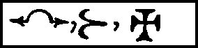
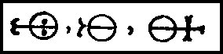
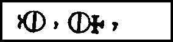
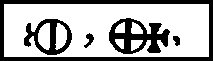
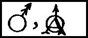
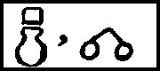
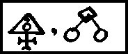
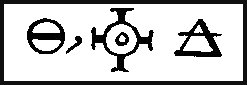
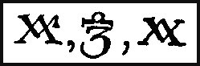
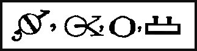
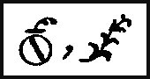
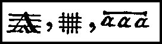
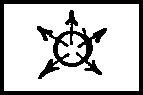
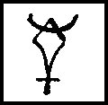
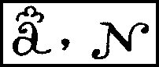
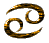
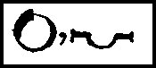
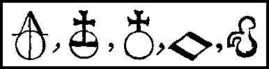
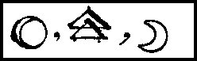
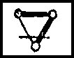
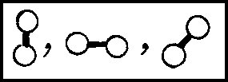
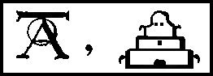
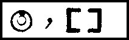
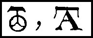
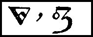
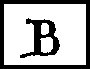
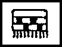
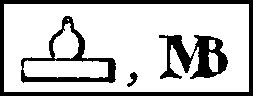
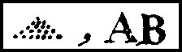
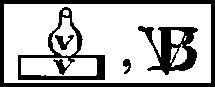
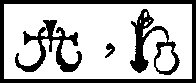
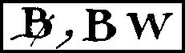
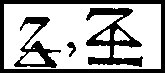
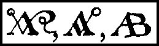
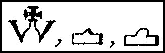
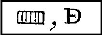
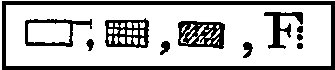
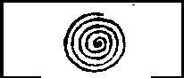
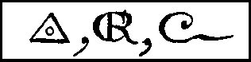
Noms cités
Fulcanelli · Hermes · Jean · Venus · Atalanta · Chevreul · Saturne · Jupiter · Valentin · Basile · Newton · Canseliet · Pernety · Flamel